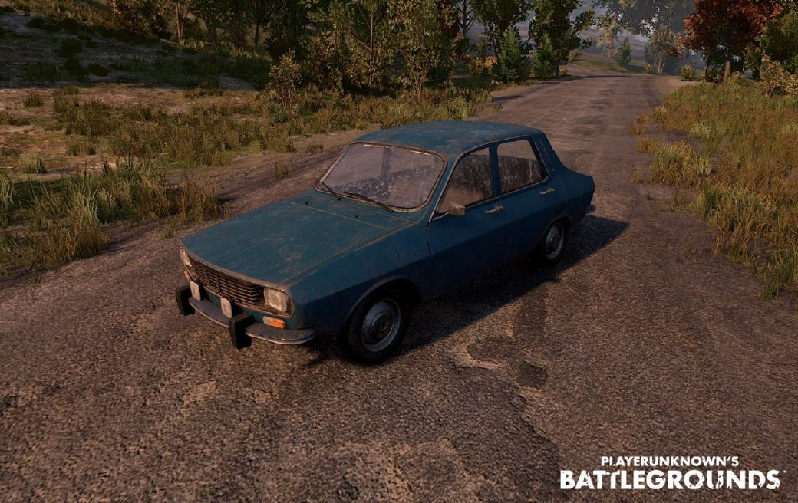

УАЗ-469
Технические характеристики машины:
- Количество мест: 4
- Максимальная скорость: ~ 99км/ч
- Плюсы: быстрая и закрытая со всех сторон, не так быстро взрывается после попадания пуль, вместительна и экономична в плане расхода топлива
- Минусы: для передвижения по горам не предназначена, плохо набирает скорость
Седан Dacia 1300

Технические характеристики машины:
- Количество мест: 4
- Максимальная скорость: ~ 113 км/ч
- Плюсы: быстрая и закрытая со всех сторон, не так быстро взрывается после попадания пуль, вместительна и экономична в плане расхода топлива
- Минусы: для передвижения по горам не предназначена, плохо набирает скорость
Багги
Технические характеристики машины:
- Количество мест: 2
- Максимальная скорость: ~ 113 км/ч
- Плюсы: быстрая и закрытая со всех сторон, не так быстро взрывается после попадания пуль, вместительна и экономична в плане расхода топлива
- Минусы: для передвижения по горам не предназначена, плохо набирает скорость